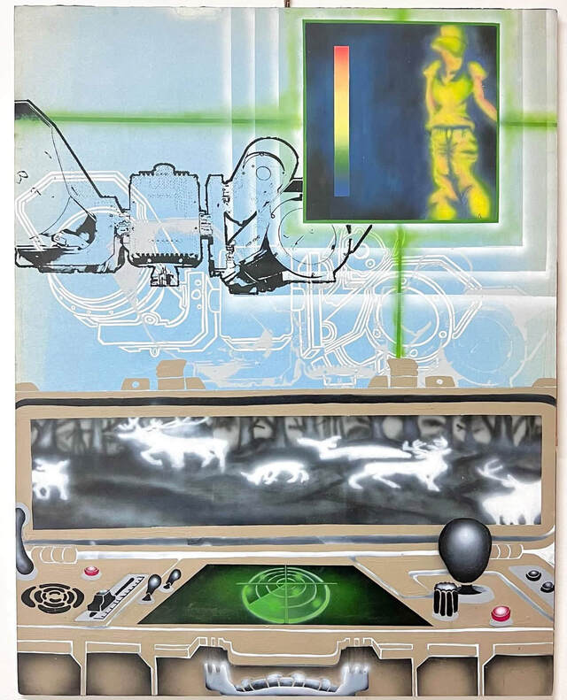

Airbrush and Acrylic on Paper
Study about thermal imagery and heat sensing technology. This work explores the relationship between human presence, perception, and technological systems of sensing and translation.